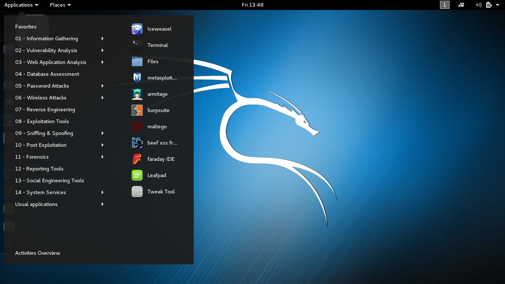

Kali
Kali Linux est un projet open source qui est maintenu et financé par Offensive Security.
C'est une distribution Linux basée sur Debian et destinée aux tests de pénétration et aux audits de sécurité avancés.
Kali Linux a été publié le 13 mars 2013 comme une reconstruction complète de BackTrack Linux.

Kali sous l'environnement de bureau Gnome
Les plus
- Kali comporte une suite d'outils gratuits et très avancés.
- Linux est proposé sur la base de logiciels libres.
- Utile pour les débutants en programmation.
- Kali est une distribution très légere.
- De nombreux outils de test d'intrusion sont disponibles avec Kali conçus pour faciliter l'inspection de la sécurité des réseaux.
Les Moins
- Les utilisateurs expérimentés se passeront vite des outils proposés par Kali.